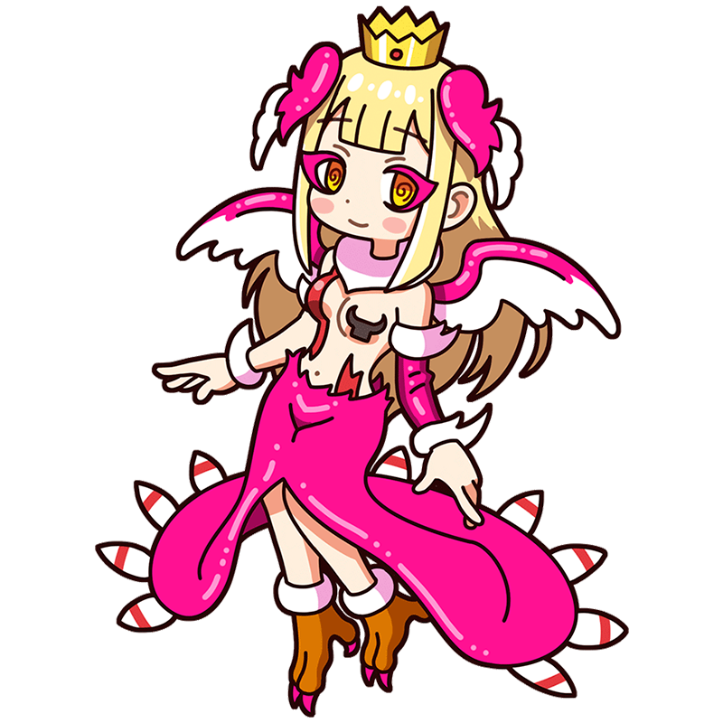

嘴のように鋭く。
翼のように、まどろんで……。
エルンスト
まわるまわる、幻視の光景
想像力は翼をたたえる
ダダイスムを経てシュルレアリスムに合流したドイツ生まれのミューズ。自身の神秘的な経験をもとに摩訶不思議な作品を作った。鳥人だが、持病のめまいのせいであまり長くは飛べない。大変な美人でよく恋心を抱かれている。
様式
ダダイスム出身国
ドイツ帝国
代表作
- 『セレベスの象』
- 『ナイチンゲールに脅かされるふたりの子供』
- 『百頭女』など
エルンストといえばこの一枚！
セレベスの象
灰色の空の下に金属製らしき巨大な建造物が鎮座している。タイトルを見る限りおそらく象であろうそれは、手前にいる女性の裸体に向けて角のある鼻を振っている。描かれたのは1921年。第一次世界大戦に従軍し兵器による近代戦を目の当たりにした画家の体験は、この絵の成り立ちと決して無関係ではないだろう。
制作年
1921年
技法・材質
油彩、キャンバス
寸法
125.4 cm x 107.9 cm
所蔵
テート・モダン
(イギリス)
作品画像出典: https://en.wikipedia.org/wiki/File:The_Elephant_Celebes.jpg
エルンストってどんな芸術家？
マックス・エルンスト
ドイツに生まれ、ダダイスムを経てシュルレアリスムを発展させた巨匠。無意識や夢の世界、不条理な出来事を好んで題材とし、それらを表現する過程で不思議な文様を生み出す「フロッタージュ」「グラッタージュ」といった技法を開発した。また雑誌の切り抜きなどを貼り付け新たな形を作る「コラージュ」にも傾倒し、奇妙な生物や幻想的な物語を作り出した。子供の時の体験から鳥に執着があり、しばしば彼の作品にもモチーフとして登場する。
フルネーム
Maximilian Maria Ernst
誕生
1891年4月2日
死没
1976年4月1日(84歳没)